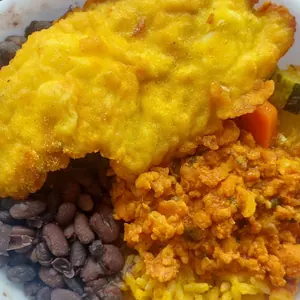
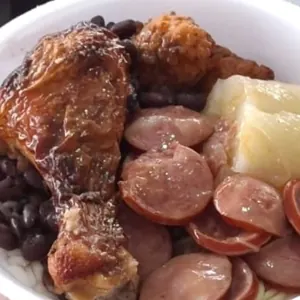
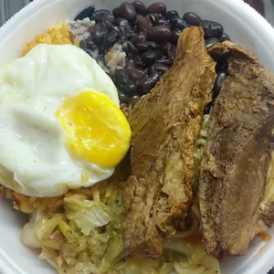
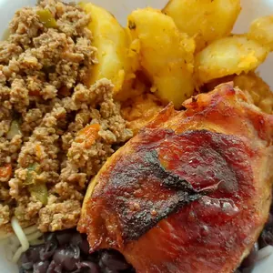
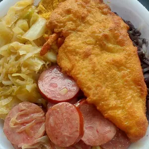
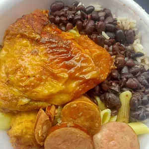
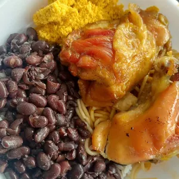
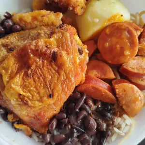
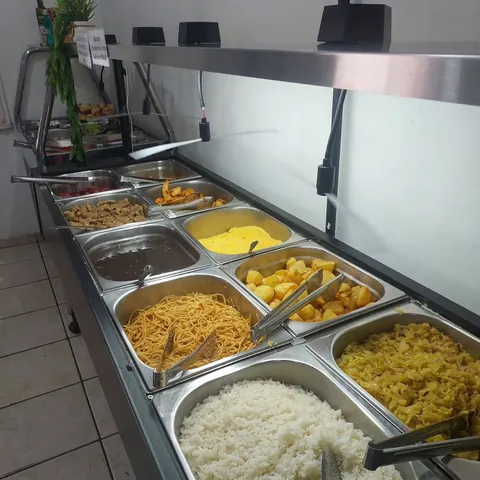

Marmita do dia, com delivery em Joinville.
Arroz, feijão e a mistura de hoje, feitos no Restaurante da Katia, na XV de Novembro. O cardápio muda todo dia: pergunte o de hoje no WhatsApp.
Cada dia, um prato diferente.
Marmitas que o restaurante postou, na ordem em que saíram. O último prato da fila é o de hoje, e esse só o WhatsApp sabe.




a de hoje? hoje pergunte
O melhor delivery de marmita da cidade.
É assim que a casa se apresenta. Cardápio variado todos os dias, e o pedido sai pelo WhatsApp.
Pedir a marmita de hoje


Sexta de dobradinha.
Tem sexta-feira com dobradinha no cardápio. Vem com arroz ou só a dobradinha, em tamanho médio ou grande.
Perguntar se tem nesta sexta- Com arrozmédio ou grande
- Só a dobradinhamédio ou grande

Também é restaurante.
Além do delivery, a casa tem o balcão de comida quente, na Rua XV de Novembro, 8691, em Joinville.